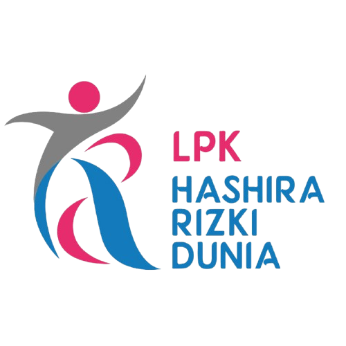
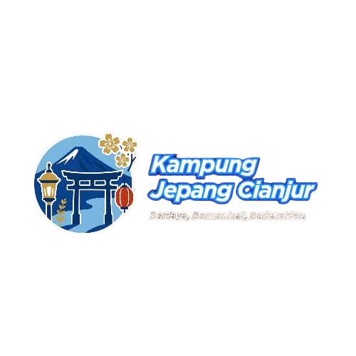
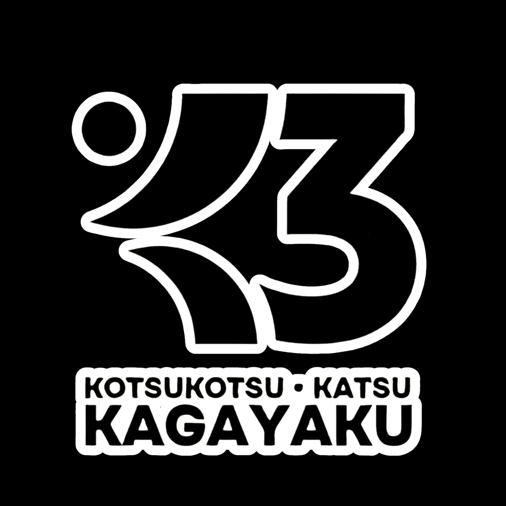

LPK Hashira Rizki Dunia
Partner Kayuki untuk proses pemberangkatan siswa ke Jepang, termasuk arahan dan tahapan persiapan lanjutan.
Kayuki Nihongo Gakkou adalah lembaga pendidikan bahasa Jepang di Cianjur yang berfokus pada pembelajaran bahasa, persiapan ujian internasional, serta bimbingan studi dan kerja ke Jepang.
NIB: 2608250098473
KBLI 78439 & 85493, usaha mikro risiko rendah
Mitra, Komunitas & Platform
Kayuki membangun proses belajar bersama pihak yang relevan, dari partner pemberangkatan, komunitas budaya, hingga platform belajar online milik Kayuki.

Partner Kayuki untuk proses pemberangkatan siswa ke Jepang, termasuk arahan dan tahapan persiapan lanjutan.

Komunitas pembelajar dan pecinta budaya Jepang yang mendukung suasana belajar lebih hidup di Cianjur.

Platform belajar online milik Kayuki untuk pembelajaran bahasa Jepang dari tingkat dasar hingga persiapan level N2.
Kayuki menyiapkan lingkungan belajar yang terarah, nyaman, dan relevan untuk siswa yang ingin belajar, bekerja, atau berkarya di Jepang.
Ruang belajar nyaman, media pembelajaran yang mendukung, dan suasana belajar yang fokus untuk pengembangan bahasa Jepang.
Materi bahasa, budaya, etika kerja, dan persiapan seleksi disusun agar sesuai dengan kebutuhan studi, kerja, dan magang ke Jepang.
Dibimbing oleh founder dan tim pengajar yang memiliki pengalaman dalam pengajaran bahasa Jepang dan pendampingan siswa sejak 2017.
Siswa didampingi dari registrasi, wawancara, pelatihan, job matching, pemberkasan, hingga persiapan pemberangkatan.
Kayuki menyiapkan siswa agar memiliki bahasa, karakter, dan kesiapan adaptasi untuk lingkungan Jepang
Budaya Indonesia identik dengan keramahan, kesopanan, dan nilai Bhinneka Tunggal Ika yang dapat memperkaya lingkungan belajar maupun kerja di Jepang.
Kandidat Indonesia dikenal memiliki etos kerja, disiplin, dan kemampuan menghargai aturan yang selaras dengan budaya Jepang.
Terbiasa hidup dalam keragaman budaya membuat kandidat Indonesia lebih fleksibel, cepat berbaur, dan siap menyesuaikan diri dengan tata krama Jepang.
Program Kayuki disusun untuk persiapan bahasa, studi, kerja, magang, dan pengembangan calon pengajar.
Program magang ke Jepang untuk lulusan baru usia 18-25 tahun dengan pembekalan bahasa, keterampilan, dan budaya kerja Jepang.
Persiapan untuk jalur kerja dengan visa Tokutei Ginou bagi kandidat yang memiliki keterampilan, pengetahuan, atau pengalaman khusus.
Kelas bahasa Jepang untuk peningkatan kompetensi dan Training of Trainer bagi calon pengajar agar siap mengajar secara efektif.
Program untuk calon peserta yang ingin belajar sambil bekerja paruh waktu di fasilitas kesehatan Jepang.
Alur pendampingan dari registrasi sampai pemberangkatan
Melengkapi formulir pendaftaran, komitmen, CV/Risrekisho, dan dokumen lain yang diperlukan.
Seleksi calon siswa melalui wawancara, uji kepribadian, dan evaluasi kesehatan.
Pendidikan bahasa, budaya, etika kerja Jepang, dan persiapan ujian bahasa Jepang.
Pencarian peluang kerja untuk siswa dan wawancara bersama user atau perwakilan perusahaan Jepang.
Penyelesaian dokumen setelah lulus seleksi perusahaan hingga persiapan keberangkatan.
Setelah semua persiapan selesai, siswa siap berangkat ke Jepang.
Kegiatan pembelajaran, pelatihan, dan kebersamaan di Kayuki Nihongo Gakkou
150 murid bimbingan founder Kayuki telah kuliah dan bekerja di berbagai kota di Jepang